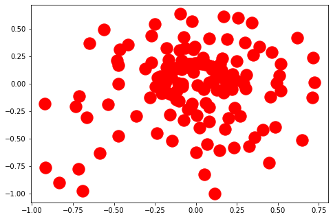

Collocation
Contents
Collocation#
Data Preparation#
Loading data#
本單元將依照政大資科黃瀚萱老師的教材建議採用一個較長文本《共產黨宣言（The Communist Manifesto）》來介紹Collocation，並測試能否找到一些該文本的特徵。該文件可由Project Gutenberg免費電子書處下載，你也可以下載其他的英文書籍來做測試，以觀察文本間的差異。
# using colab
!wget https://raw.githubusercontent.com/P4CSS/PSS/master/data/corpus02.txt -O corpus02.txt
with open("corpus02.txt", encoding="utf8") as fin:
text = fin.read()
print("Number of characters: %d" % len(text))
--2022-10-02 21:05:38-- https://raw.githubusercontent.com/P4CSS/PSS/master/data/corpus02.txt
Resolving raw.githubusercontent.com (raw.githubusercontent.com)... 185.199.111.133, 185.199.109.133, 185.199.108.133, ...
Connecting to raw.githubusercontent.com (raw.githubusercontent.com)|185.199.111.133|:443...
connected.
HTTP request sent, awaiting response...
200 OK
Length: 75348 (74K) [text/plain]
Saving to: 'corpus02.txt'
corpus02.txt 0%[ ] 0 --.-KB/s
corpus02.txt 100%[===================>] 73.58K --.-KB/s in 0.09s
2022-10-02 21:05:38 (850 KB/s) - 'corpus02.txt' saved [75348/75348]
Number of characters: 75346
# github + jupyterlab
with open("data/corpus02.txt", encoding="utf8") as fin:
text = fin.read()
print("Number of characters: %d" % len(text))
---------------------------------------------------------------------------
FileNotFoundError Traceback (most recent call last)
Input In [2], in <cell line: 2>()
1 # github + jupyterlab
----> 2 with open("data/corpus02.txt", encoding="utf8") as fin:
3 text = fin.read()
4 print("Number of characters: %d" % len(text))
FileNotFoundError: [Errno 2] No such file or directory: 'data/corpus02.txt'
Fundamental text processing#
import nltk
nltk.download('punkt')
from nltk.tokenize import word_tokenize
# from nltk.corpus import stopwords
# stopword_list = stopwords.words('english')
raw_tokens = word_tokenize(text)
tokens = []
for token in raw_tokens:
if token.isalpha():
# if token.lower() not in stopword_list:
tokens.append(token.lower())
print("Number of tokens: %d" % len(tokens))
Number of tokens: 11781
[nltk_data] Downloading package punkt to /Users/jirlong/nltk_data...
[nltk_data] Package punkt is already up-to-date!
tokens[:20]
['manifesto',
'of',
'the',
'communist',
'party',
'by',
'karl',
'marx',
'and',
'frederick',
'engels',
'a',
'specter',
'is',
'haunting',
'europe',
'the',
'specter',
'of',
'communism']
Most Frequent Tokens: Term frequency#
from collections import Counter
word_counts = Counter(tokens)
for w, c in word_counts.most_common(20):
print("%s\t%d" % (w, c))
the 1167
of 801
and 360
in 299
to 279
a 173
is 138
that 128
by 123
class 104
with 101
it 100
bourgeois 99
all 98
bourgeoisie 92
as 86
for 84
they 83
its 81
their 80
Collocation#
Conting most Frequent Collocations#
word_pair_counts = Counter()
for i in range(len(tokens) - 1):
(w1, w2) = (tokens[i], tokens[i + 1])
word_pair_counts[(w1, w2)] += 1
for pair, c in word_pair_counts.most_common(20):
print("%s\t%s\t%d" % (pair[0], pair[1], c))
of the 244
in the 91
the bourgeoisie 66
the proletariat 50
to the 43
by the 40
for the 38
of production 38
with the 34
the bourgeois 33
conditions of 29
means of 25
of society 24
against the 23
on the 23
working class 23
to be 22
of all 22
is the 21
the communists 21
Show the content in word_pair_counts#
print(word_pair_counts.most_common(1)[0])
(('of', 'the'), 244)
Alternative way to get the contents in the pair.#
for (w1, w2), c in word_pair_counts.most_common(20):
print("%s\t%s\t%d" % (w1, w2, c))
of the 244
in the 91
the bourgeoisie 66
the proletariat 50
to the 43
by the 40
for the 38
of production 38
with the 34
the bourgeois 33
conditions of 29
means of 25
of society 24
against the 23
on the 23
working class 23
to be 22
of all 22
is the 21
the communists 21
Removing stopwords#
nltk.download('stopwords')
from nltk.corpus import stopwords
stopword_list = stopwords.words('english')
word_pair_nosw_counts = Counter()
for i in range(len(tokens) - 1):
(w1, w2) = (tokens[i], tokens[i + 1])
if w1 not in stopword_list and w2 not in stopword_list:
word_pair_nosw_counts[(w1, w2)] += 1
for (w1, w2), c in word_pair_nosw_counts.most_common(20):
print("%s\t%s\t%d" % (w1, w2, c))
[nltk_data] Downloading package stopwords to
[nltk_data] /Users/jirlong/nltk_data...
[nltk_data] Unzipping corpora/stopwords.zip.
working class 23
bourgeois society 15
class antagonisms 11
modern industry 11
ruling class 11
productive forces 9
modern bourgeois 8
middle ages 7
bourgeois property 7
private property 7
feudal society 6
middle class 6
social conditions 6
property relations 6
class struggle 6
old society 6
petty bourgeois 6
existing society 5
one word 5
bourgeois socialism 5
Distant Collocations#
Most frequent collocations with a distance of k#
window_size = 9
word_pair_counts = Counter()
word_pair_distance_counts = Counter()
for i in range(len(tokens) - 1):
for distance in range(1, window_size):
if i + distance < len(tokens):
w1 = tokens[i]
w2 = tokens[i + distance]
word_pair_distance_counts[(w1, w2, distance)] += 1
word_pair_counts[(w1, w2)] += 1
print(len(word_pair_counts))
for (w1, w2, distance), c in word_pair_distance_counts.most_common(20):
print("%s\t%s\t%d\t%d" % (w1, w2, distance, c))
53403
the of 2 302
of the 1 244
the the 3 186
the the 8 134
the the 6 129
the the 7 126
the of 3 125
the the 4 117
the the 5 114
of the 4 92
in the 1 91
of the 8 91
of the 6 88
the of 7 81
the of 6 77
of the 7 76
the of 5 76
the of 8 75
of the 5 72
the bourgeoisie 1 66
Show an entry in word_pair_distance#
print(word_pair_distance_counts.most_common(1)[0])
print(word_pair_distance_counts['the', 'of', 1])
print(word_pair_distance_counts['the', 'of', 100])
for distance in range(1, window_size):
print("Occurrences of the word pair (%s, %s) with a distance of %d: %d" % (
'the', 'of', distance, word_pair_distance_counts['the', 'of', distance]))
print("Occurrences of the usage 'the * * of'")
print(word_pair_distance_counts['the', 'of', 2])
print("Occurrences of the usage 'of * * the'")
print(word_pair_distance_counts['of', 'the', 2])
(('the', 'of', 2), 302)
3
0
Occurrences of the word pair (the, of) with a distance of 1: 3
Occurrences of the word pair (the, of) with a distance of 2: 302
Occurrences of the word pair (the, of) with a distance of 3: 125
Occurrences of the word pair (the, of) with a distance of 4: 59
Occurrences of the word pair (the, of) with a distance of 5: 76
Occurrences of the word pair (the, of) with a distance of 6: 77
Occurrences of the word pair (the, of) with a distance of 7: 81
Occurrences of the word pair (the, of) with a distance of 8: 75
Occurrences of the usage 'the * * of'
302
Occurrences of the usage 'of * * the'
27
Filtering the collocations with mean distance#
pair_mean_distances = Counter()
for (w1, w2, distance), c in word_pair_distance_counts.most_common():
pair_mean_distances[(w1, w2)] += distance * (c / word_pair_counts[(w1, w2)])
for (w1, w2), distance in pair_mean_distances.most_common(20):
print("%s\t%s\t%f\t%d" % (w1, w2, distance, word_pair_counts[(w1, w2)]))
of destroyed 8.000000 3
to petty 8.000000 3
necessarily of 8.000000 3
in communistic 8.000000 2
world and 8.000000 2
and existing 8.000000 2
is slave 8.000000 2
an each 8.000000 2
time society 8.000000 2
an communication 8.000000 2
every we 8.000000 2
that word 8.000000 2
bourgeoisie market 8.000000 2
of feet 8.000000 2
population property 8.000000 2
at these 8.000000 2
our relations 8.000000 2
is subsistence 8.000000 2
disposal the 8.000000 2
wealth bourgeoisie 8.000000 2
Filtering one-time cases#
pair_mean_distances = Counter()
for (w1, w2, distance), c in word_pair_distance_counts.most_common():
if word_pair_counts[(w1, w2)] > 1:
pair_mean_distances[(w1, w2)] += distance * (c / word_pair_counts[(w1, w2)])
for (w1, w2), distance in pair_mean_distances.most_common(20):
print("%s\t%s\t%f\t%d" % (w1, w2, distance, word_pair_counts[(w1, w2)]))
of destroyed 8.000000 3
to petty 8.000000 3
necessarily of 8.000000 3
in communistic 8.000000 2
world and 8.000000 2
and existing 8.000000 2
is slave 8.000000 2
an each 8.000000 2
time society 8.000000 2
an communication 8.000000 2
every we 8.000000 2
that word 8.000000 2
bourgeoisie market 8.000000 2
of feet 8.000000 2
population property 8.000000 2
at these 8.000000 2
our relations 8.000000 2
is subsistence 8.000000 2
disposal the 8.000000 2
wealth bourgeoisie 8.000000 2
for (w1, w2), distance in pair_mean_distances.most_common()[-20:]:
print("%s\t%s\t%f\t%d" % (w1, w2, distance, word_pair_counts[(w1, w2)]))
continued existence 1.000000 2
complete systems 1.000000 2
they wish 1.000000 2
new jerusalem 1.000000 2
every revolutionary 1.000000 2
revolutionary movement 1.000000 2
could be 1.000000 2
and others 1.000000 2
these systems 1.000000 2
social science 1.000000 2
most suffering 1.000000 2
suffering class 1.000000 2
antagonisms they 1.000000 2
their ends 1.000000 2
a critical 1.000000 2
these proposals 1.000000 2
chiefly to 1.000000 2
they support 1.000000 2
partly of 1.000000 2
existing social 1.000000 2
num_pairs = len(pair_mean_distances)
mid = num_pairs // 2
for (w1, w2), distance in pair_mean_distances.most_common()[mid-10:mid+10]:
print("%s\t%s\t%f\t%d" % (w1, w2, distance, word_pair_counts[(w1, w2)]))
which laborer 4.500000 2
in bare 4.500000 2
a existence 4.500000 2
means appropriation 4.500000 2
intend the 4.500000 2
personal appropriation 4.500000 2
labor appropriation 4.500000 2
and leaves 4.500000 2
away is 4.500000 2
is far 4.500000 2
the living 4.500000 2
to accumulated 4.500000 2
increase labor 4.500000 2
accumulated is 4.500000 2
enrich the 4.500000 2
past society 4.500000 4
dominates present 4.500000 2
the person 4.500000 2
trade selling 4.500000 2
but selling 4.500000 2
Filtering with offset deviation#
pair_deviations = Counter()
for (w1, w2, distance), c in word_pair_distance_counts.most_common():
if word_pair_counts[(w1, w2)] > 1:
pair_deviations[(w1, w2)] += c * ((distance - pair_mean_distances[(w1, w2)]) ** 2)
for (w1, w2), dev_tmp in pair_deviations.most_common():
s_2 = dev_tmp / (word_pair_counts[(w1, w2)] - 1)
pair_deviations[(w1, w2)] = s_2 ** 0.5
for (w1, w2), dev in pair_deviations.most_common(20):
print("%s\t%s\t%f\t%f\t%d" % (w1, w2, pair_mean_distances[(w1, w2)], dev, word_pair_counts[(w1, w2)]))
the branding 4.500000 4.949747 2
sketched the 4.500000 4.949747 2
class struggles 4.500000 4.949747 2
journeyman in 4.500000 4.949747 2
in almost 4.500000 4.949747 2
epochs of 4.500000 4.949747 2
everywhere a 4.500000 4.949747 2
old bourgeois 4.500000 4.949747 2
navigation and 4.500000 4.949747 2
vanished in 4.500000 4.949747 2
the giant 4.500000 4.949747 2
the leaders 4.500000 4.949747 2
armies the 4.500000 4.949747 2
its capital 4.500000 4.949747 2
oppressed class 4.500000 4.949747 2
the executive 4.500000 4.949747 2
enthusiasm of 4.500000 4.949747 2
of egotistical 4.500000 4.949747 2
its relation 4.500000 4.949747 2
ones that 4.500000 4.949747 2
for (w1, w2), dev in pair_deviations.most_common()[-20:]:
print("%s\t%s\t%f\t%f\t%d" % (w1, w2, pair_mean_distances[(w1, w2)], dev, word_pair_counts[(w1, w2)]))
being class 4.000000 0.000000 2
most suffering 1.000000 0.000000 2
suffering class 1.000000 0.000000 2
antagonisms they 1.000000 0.000000 2
the appeal 6.000000 0.000000 2
they ends 5.000000 0.000000 2
their ends 1.000000 0.000000 2
a critical 1.000000 0.000000 2
these proposals 1.000000 0.000000 2
of c 6.000000 0.000000 2
chiefly to 1.000000 0.000000 2
chiefly germany 2.000000 0.000000 2
communists against 6.000000 0.000000 2
they support 1.000000 0.000000 2
partly of 1.000000 0.000000 2
partly in 4.000000 0.000000 2
germany fight 2.000000 0.000000 2
revolutionary against 2.000000 0.000000 2
germany immediately 8.000000 0.000000 2
existing social 1.000000 0.000000 2
With a higher supportive threshold#
pair_deviations = Counter()
for (w1, w2, distance), c in word_pair_distance_counts.most_common():
if word_pair_counts[(w1, w2)] > 10:
pair_deviations[(w1, w2)] += c * ((distance - pair_mean_distances[(w1, w2)]) ** 2)
for (w1, w2), dev_tmp in pair_deviations.most_common():
s_2 = dev_tmp / (word_pair_counts[(w1, w2)] - 1)
pair_deviations[(w1, w2)] = s_2 ** 0.5
for (w1, w2), dev in pair_deviations.most_common()[-20:]:
print("%s\t%s\t%f\t%f\t%d" % (w1, w2, pair_mean_distances[(w1, w2)], dev, word_pair_counts[(w1, w2)]))
be and 3.833333 1.466804 12
have of 5.869565 1.455533 23
to be 1.416667 1.442120 24
the communism 4.454545 1.439697 11
of can 5.000000 1.414214 11
in but 5.000000 1.414214 11
for a 2.076923 1.382120 13
for class 5.363636 1.361817 11
as and 5.153846 1.344504 13
has of 5.730769 1.343360 26
it has 1.409091 1.333063 22
working class 1.360000 1.319091 25
in class 5.272727 1.272078 11
bourgeois society 1.312500 1.250000 16
it of 6.088235 1.239933 34
by means 1.692308 0.947331 13
in proportion 1.500000 0.904534 12
they are 1.250000 0.866025 12
modern industry 1.166667 0.577350 12
ruling class 1.000000 0.000000 11
Pearson’s Chi-Square Test#
Back to bigrams#
word_pair_counts = Counter()
word_counts = Counter(tokens)
num_bigrams = 0
for i in range(len(tokens) - 1):
w1 = tokens[i]
w2 = tokens[i + 1]
word_pair_counts[(w1, w2)] += 1
num_bigrams += 1
print(num_bigrams)
11780
Chi-Square function#
def chisquare(o11, o12, o21, o22):
n = o11 + o12 + o21 + o22
x_2 = (n * ((o11 * o22 - o12 * o21)**2)) / ((o11 + o12) * (o11 + o21) * (o12 + o22) * (o21 + o22))
return x_2
Now we can compute the chi-squares.#
pair_chi_squares = Counter()
for (w1, w2), w1_w2_count in word_pair_counts.most_common():
w1_only_count = word_counts[w1] - w1_w2_count
w2_only_count = word_counts[w2] - w1_w2_count
rest_count = num_bigrams - w1_only_count - w2_only_count - w1_w2_count
pair_chi_squares[(w1, w2)] = chisquare(w1_w2_count, w1_only_count, w2_only_count, rest_count)
for (w1, w2), x_2 in pair_chi_squares.most_common(20):
print("%s\t%s\t%d\t%f" % (w1, w2, word_pair_counts[(w1, w2)], x_2))
third estate 2 11780.000000
constitution adapted 2 11780.000000
karl marx 1 11780.000000
frederick engels 1 11780.000000
czar metternich 1 11780.000000
police spies 1 11780.000000
nursery tale 1 11780.000000
italian flemish 1 11780.000000
danish languages 1 11780.000000
plebeian lord 1 11780.000000
complicated arrangement 1 11780.000000
manifold gradation 1 11780.000000
patricians knights 1 11780.000000
knights plebeians 1 11780.000000
journeymen apprentices 1 11780.000000
subordinate gradations 1 11780.000000
cape opened 1 11780.000000
proper serving 1 11780.000000
left remaining 1 11780.000000
heavenly ecstacies 1 11780.000000
Focus on more frequent bigrams#
pair_chi_squares = Counter()
for (w1, w2), w1_w2_count in word_pair_counts.most_common():
if w1_w2_count > 5:
w1_only_count = word_counts[w1] - w1_w2_count
w2_only_count = word_counts[w2] - w1_w2_count
rest_count = num_bigrams - w1_only_count - w2_only_count - w1_w2_count
pair_chi_squares[(w1, w2)] = chisquare(w1_w2_count, w1_only_count, w2_only_count, rest_count)
for (w1, w2), x_2 in pair_chi_squares.most_common(20):
print("%s\t%s\t%d\t%f" % (w1, w2, word_pair_counts[(w1, w2)], x_2))
productive forces 9 9636.544203
middle ages 7 4928.714781
no longer 14 4150.496033
working class 23 2477.732678
modern industry 11 1128.037662
class antagonisms 11 1042.736309
private property 7 1022.522314
ruling class 11 966.767323
can not 9 775.745125
their own 11 759.449519
proportion as 8 720.619853
have been 7 702.438620
it has 20 652.817376
away with 8 563.758348
to be 22 468.075784
just as 6 439.987822
of the 244 406.859323
the bourgeoisie 66 397.199063
its own 8 392.296908
petty bourgeois 6 381.069314
for (w1, w2), x_2 in pair_chi_squares.most_common()[-20:]:
print("%s\t%s\t%d\t%f" % (w1, w2, word_pair_counts[(w1, w2)], x_2))
is the 21 4.412587
and by 7 2.913108
at the 7 2.592918
and that 7 2.542680
be the 7 2.367553
proletariat the 10 2.357617
bourgeois the 6 1.654642
that of 6 0.910970
and of 20 0.906966
of class 9 0.569228
bourgeoisie the 7 0.548588
that the 15 0.476118
of its 7 0.436822
and in 11 0.401790
society the 6 0.307430
all the 11 0.192300
the property 6 0.041125
and to 9 0.027804
the class 10 0.009971
class the 10 0.009971
Now we can filtering out the stopwords#
pair_chi_squares = Counter()
for (w1, w2), w1_w2_count in word_pair_counts.most_common():
if w1_w2_count > 1 and w1 not in stopword_list and w2 not in stopword_list:
w1_only_count = word_counts[w1] - w1_w2_count
w2_only_count = word_counts[w2] - w1_w2_count
rest_count = num_bigrams - w1_only_count - w2_only_count - w1_w2_count
pair_chi_squares[(w1, w2)] = chisquare(w1_w2_count, w1_only_count, w2_only_count, rest_count)
for (w1, w2), x_2 in pair_chi_squares.most_common(20):
print("%s\t%s\t%d\t%f" % (w1, w2, word_pair_counts[(w1, w2)], x_2))
third estate 2 11780.000000
constitution adapted 2 11780.000000
productive forces 9 9636.544203
eternal truths 3 8834.249809
corporate guilds 2 7852.666553
absolute monarchy 4 7537.599406
eighteenth century 3 7066.799694
immense majority 3 6624.749575
laid bare 2 5888.999830
distinctive feature 2 5234.221968
torn asunder 2 5234.221968
middle ages 7 4928.714781
radical rupture 2 4710.799796
buying disappears 2 3925.333107
let us 3 3310.499278
upper hand 2 2943.499745
commercial crises 2 2943.499745
various stages 2 2943.499745
united action 3 2942.749427
raw material 2 2616.221958
for (w1, w2), x_2 in pair_chi_squares.most_common()[-20:]:
print("%s\t%s\t%d\t%f" % (w1, w2, word_pair_counts[(w1, w2)], x_2))
many bourgeois 2 49.412739
bourgeois private 2 44.087627
petty bourgeoisie 2 43.023037
modern working 2 41.985003
bourgeois freedom 2 39.732201
revolutionary proletariat 2 35.100229
old conditions 2 32.566311
feudal property 2 31.386462
old property 2 28.685615
bourgeois revolution 2 26.136797
modern bourgeoisie 3 21.380029
whole bourgeoisie 2 20.752016
revolutionary class 2 20.224783
bourgeois state 2 17.063629
every class 2 16.075081
bourgeois conditions 3 16.040705
bourgeois form 2 14.680146
one class 2 10.562861
bourgeois production 2 5.662454
bourgeois class 3 5.261506
Mutual Information#
Define a function for computing mutual information#
import math
def mutual_information(w1_w2_prob, w1_prob, w2_prob):
return math.log2(w1_w2_prob / (w1_prob * w2_prob))
num_unigrams = sum(word_counts.values())
pair_mutual_information_scores = Counter()
for (w1, w2), w1_w2_count in word_pair_counts.most_common():
if w1_w2_count > 0:
w1_prob = word_counts[w1] / num_unigrams
w2_prob = word_counts[w2] / num_unigrams
w1_w2_prob = w1_w2_count / num_bigrams
pair_mutual_information_scores[(w1, w2)] = mutual_information(w1_w2_prob, w1_prob, w2_prob)
for (w1, w2), mi in pair_mutual_information_scores.most_common(20):
print("%s\t%s\t%d\t%f" % (w1, w2, word_pair_counts[(w1, w2)], mi))
karl marx 1 13.524297
frederick engels 1 13.524297
czar metternich 1 13.524297
police spies 1 13.524297
nursery tale 1 13.524297
italian flemish 1 13.524297
danish languages 1 13.524297
plebeian lord 1 13.524297
complicated arrangement 1 13.524297
manifold gradation 1 13.524297
patricians knights 1 13.524297
knights plebeians 1 13.524297
journeymen apprentices 1 13.524297
subordinate gradations 1 13.524297
cape opened 1 13.524297
proper serving 1 13.524297
left remaining 1 13.524297
heavenly ecstacies 1 13.524297
chivalrous enthusiasm 1 13.524297
egotistical calculation 1 13.524297
num_unigrams = sum(word_counts.values())
pair_mutual_information_scores = Counter()
for (w1, w2), w1_w2_count in word_pair_counts.most_common():
if w1_w2_count > 5:
w1_prob = word_counts[w1] / num_unigrams
w2_prob = word_counts[w2] / num_unigrams
w1_w2_prob = w1_w2_count / num_bigrams
pair_mutual_information_scores[(w1, w2)] = mutual_information(w1_w2_prob, w1_prob, w2_prob)
for (w1, w2), mi in pair_mutual_information_scores.most_common(20):
print("%s\t%s\t%d\t%f" % (w1, w2, word_pair_counts[(w1, w2)], mi))
productive forces 9 10.064865
middle ages 7 9.461287
no longer 14 8.215308
private property 7 7.202369
working class 23 6.762457
modern industry 11 6.699483
have been 7 6.669874
class antagonisms 11 6.582849
proportion as 8 6.513070
ruling class 11 6.475934
can not 9 6.453431
just as 6 6.223563
away with 8 6.165646
their own 11 6.138238
petty bourgeois 6 6.020471
middle class 6 5.708380
its own 8 5.660885
property relations 6 5.658048
not only 7 5.550292
class struggle 6 5.321357
Now we can filtering out the collocations containing stopwords#
num_unigrams = sum(word_counts.values())
pair_mutual_information_scores = Counter()
for (w1, w2), w1_w2_count in word_pair_counts.most_common():
if w1_w2_count > 1 and w1 not in stopword_list and w2 not in stopword_list:
w1_prob = word_counts[w1] / num_unigrams
w2_prob = word_counts[w2] / num_unigrams
w1_w2_prob = w1_w2_count / num_bigrams
pair_mutual_information_scores[(w1, w2)] = mutual_information(w1_w2_prob, w1_prob, w2_prob)
for (w1, w2), mi in pair_mutual_information_scores.most_common(20):
print("%s\t%s\t%d\t%f" % (w1, w2, word_pair_counts[(w1, w2)], mi))
third estate 2 12.524297
constitution adapted 2 12.524297
corporate guilds 2 11.939334
eternal truths 3 11.524297
laid bare 2 11.524297
distinctive feature 2 11.354372
torn asunder 2 11.354372
eighteenth century 3 11.202369
radical rupture 2 11.202369
immense majority 3 11.109259
buying disappears 2 10.939334
absolute monarchy 4 10.880441
upper hand 2 10.524297
commercial crises 2 10.524297
various stages 2 10.524297
earlier epochs 2 10.354372
raw material 2 10.354372
complete systems 2 10.354372
guild masters 2 10.202369
best possible 2 10.202369
%who
Counter c chisquare dev dev_tmp distance fin i math
mi mid mutual_information nltk num_bigrams num_pairs num_unigrams pair pair_chi_squares
pair_deviations pair_mean_distances pair_mutual_information_scores raw_tokens rest_count s_2 stopword_list stopwords text
token tokens w w1 w1_only_count w1_prob w1_w2_count w1_w2_prob w2
w2_only_count w2_prob window_size word_counts word_pair_counts word_pair_distance_counts word_pair_nosw_counts word_tokenize x_2
Visualization#
Visualizing Networks in Python
import pandas as pd
# df = pd.DataFrame(pair_mutual_information_scores) # ERROR
li = [(w1, w2, word_pair_counts[(w1, w2)], mi) for (w1, w2), mi in pair_mutual_information_scores.most_common()]
df = pd.DataFrame.from_records(li, columns =['w1', 'w2', 'count', 'mi'])
df
| w1 | w2 | count | mi | |
|---|---|---|---|---|
| 0 | third | estate | 2 | 12.524297 |
| 1 | constitution | adapted | 2 | 12.524297 |
| 2 | corporate | guilds | 2 | 11.939334 |
| 3 | eternal | truths | 3 | 11.524297 |
| 4 | laid | bare | 2 | 11.524297 |
| ... | ... | ... | ... | ... |
| 142 | modern | bourgeoisie | 3 | 3.159433 |
| 143 | bourgeois | conditions | 3 | 2.836047 |
| 144 | one | class | 2 | 2.823857 |
| 145 | bourgeois | production | 2 | 2.194501 |
| 146 | bourgeois | class | 3 | 1.779463 |
147 rows × 4 columns
import networkx as nx
G = nx.from_pandas_edgelist(df,
source = 'w1',
target = 'w2',
edge_attr = 'mi')
nx.draw_kamada_kawai(G)
# nx.draw_spring(G.to_directed())
---------------------------------------------------------------------------
AttributeError Traceback (most recent call last)
<ipython-input-51-9a11ba033940> in <module>
----> 1 nx.draw_kamada_kawai(G)
2 # nx.draw_spring(G.to_directed())
~/opt/anaconda3/lib/python3.7/site-packages/networkx/drawing/nx_pylab.py in draw_kamada_kawai(G, **kwargs)
987 verticalalignment=verticalalignment,
988 transform=ax.transData,
--> 989 bbox=bbox,
990 clip_on=clip_on,
991 )
~/opt/anaconda3/lib/python3.7/site-packages/networkx/drawing/nx_pylab.py in draw(G, pos, ax, **kwds)
124 return
125
--> 126
127 def draw_networkx(G, pos=None, arrows=None, with_labels=True, **kwds):
128 r"""Draw the graph G using Matplotlib.
~/opt/anaconda3/lib/python3.7/site-packages/networkx/drawing/nx_pylab.py in draw_networkx(G, pos, arrows, with_labels, **kwds)
276 "alpha",
277 "cmap",
--> 278 "vmin",
279 "vmax",
280 "ax",
~/opt/anaconda3/lib/python3.7/site-packages/networkx/drawing/nx_pylab.py in draw_networkx_edges(G, pos, edgelist, width, edge_color, style, alpha, arrowstyle, arrowsize, edge_cmap, edge_vmin, edge_vmax, ax, arrows, label, node_size, nodelist, node_shape, **kwds)
561 If `None`, directed graphs draw arrowheads with
562 `~matplotlib.patches.FancyArrowPatch`, while undirected graphs draw edges
--> 563 via `~matplotlib.collections.LineCollection` for speed.
564 If `True`, draw arrowheads with FancyArrowPatches (bendable and stylish).
565 If `False`, draw edges using LineCollection (linear and fast).
AttributeError: module 'matplotlib.cbook' has no attribute 'iterable'

# !pip install pyvis
from pyvis.network import Network
net = Network('1024px', '2048px', notebook=True)
net.from_nx(G)
net.show("test.html")
Question#
與Mutual Information相比，Frequency based 的缺點是什什 麼?
處理理 metamorphosis_franz_kafka.txt，找出三種 collocations
Frequency-based
Chi-square test
Mutual information
metamorphosis_franz_kafka.txt 裡有很多對話或⾃自⾔言⾃自語，⽤用雙 引號區別。請只⽤用括號裡的⽂文字，建立collocations
"Oh, God", he thought, "what a strenuous career it is that I’ve chosen! Travelling day in and day out. Doing business like this takes much more effort than doing your own business at home, and on top of that there's the curse of travelling, worries about making train connections, bad and irregular food, contact with different people all the time so that you can never get to know anyone or become friendly with them. It can all go to Hell!" He felt a slight itch up on his belly; pushed himself slowly up on his back towards the headboard so that he could lift his head better;